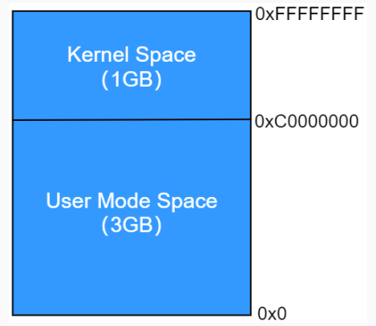
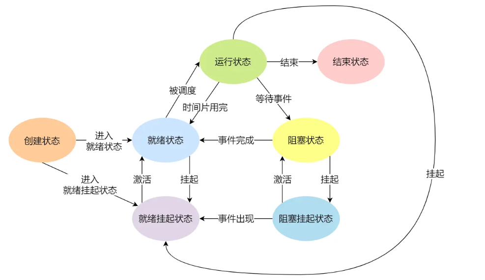

多进程编程
多进程编程
1.程序和进程
1.1程序如何被调用
通常我们的一个程序都由
main()函数开始，那么main()函数又是如何被调用的呢？
操作系统内核中实现了一个叫加载器的程序，该程序在我们准备运行某个程序时，负责将我们要运行的程序加载到内存中去执行。
int main(int argc, char *argv[])中的那些参数是如何传入的？
在运行一个程序的main()函数之前，需要运行该程序的引导代码，引导代码是在编译后被链接器加到可执行文件中的，不需要人为去编写。当我们在终端中运行一个程序并传入参数arg1 arg2...时，shell会解析这些参数并传给加载器，加载器在加载程序时会把这些参数再传给引导代码，由引导代码传入这些参数到main()中。
1.2程序如何被终止
一个进程的终止可以分为：正常终止和异常终止
正常终止：
- 在
main()中return 0; - 在应用程序中使用
exit()、_exit()、_Exit()系统调用
异常终止：
- 在应用程序中使用
abort()系统调用 - 在应用程序中收到信号，比如
SIGKILL
2.进程概述
进程是一个动态的过程，它是程序的一次执行过程，当应用程序被加载到内存中，便成为了一个进程，在其运行结束时进程就终止了，这就是一个进程的生命周期。
现在的操作系统通常支持多进程，一个进程运行一段时间可能会切换到另一个进程，但在切换器CPU会保存当前这个进程的运行信息，并在换回来后恢复这些运行信息。
2.1进程号
每个进程都有个唯一的pid（不是那个pid =。=，这里的pid是Process ID），可以通过getpid()系统调用在程序中获得，因为有时候我们需要用到，比如给自己发送信号。
2.2进程的环境变量
(1)环境变量的定义
环境变量就是系统/进程自带的一组变量，这些变量以 “名称=值1;值2;…” 的形式存储在字符串输出列表中。
(2)系统环境变量和进程环境变量的区别
根据其所属可以把环境变量分为系统环境变量和进程环境变量：
- 系统环境变量：操作系统级别的环境变量，可以被所有进程访问，且其中一些比较重要的环境变量比如
Path的名称是固定不能变的，因为有的程序比如CMAKE会直接使用该变量。 - 进程环境变量：每个进程自己的环境变量，进程和进程之间不共有
(3)环境变量的使用
用的最多的还是在shell中，比如pwd、home之类的指令的实际上都是使用的环境变量
(4)环境变量的修改
这部分参考Linux笔记目录下的那个笔记
2.3进程的内存布局
这部分和
STM32中编译生成的.hex文件的内存布局是一致的，但这里我还是重新再总结一下：
历史沿袭至今， C 语言程序（STM32也一致）一直都是由以下几部分组成的：
- 正文段（代码段）：这是 CPU 执行的机器语言指令部分，文本段具有只读属性，以防止程序由于意外而修改其指令；正文段是可以共享的，即使在多个进程间也可同时运行同一段程序。
- 初始化数据段（数据段）：包含了显式初始化的全局变量和静态变量，当程序加载到内存中时，从可执行文件中读取这些变量的值。
- 未初始化数据段（
bss段）：包含了未进行显式初始化的全局变量和静态变量，这一名词来源于早期汇编程序中的一个操作符，意思是“由符号开始的块”（block started by symbol），在程序开始执行之前，系统会将本段内所有内存初始化为 0， 可执行文件并没有为 bss 段变量分配存储空间，在可执行文件中只需记录 bss 段的位置及其所需大小，直到程序运行时，由加载器来分配这一段内存空间。 - 栈区（
stack）：函数内的局部变量以及每次函数调用时所需保存的信息都放在此段中，每次调用函数时，函数传递的实参以及函数返回值等也都存放在栈中。栈是一个动态增长和收缩的段，由栈帧组成，系统会为每个当前调用的函数分配一个栈帧，栈帧中存储了函数的局部变量（所谓自动变量）、实参和返回值。 - 堆区（
heap）：可在运行时动态进行内存分配的一块区域，譬如使用 malloc()分配的内存空间，就是从系统堆内存中申请分配的。
Linux 下的 size 命令可以查看二进制可执行文件的文本段、数据段、 bss 段的段大小：
内存分区的各段在程序运行时全是会被加载到RAM中的，这点与STM32那种嵌入式平台不用，嵌入式平台上有些段会放在ROM中，比如代码段
2.4进程的虚拟地址空间
在现代操作系统中，虚拟内存管理技术被广泛的使用：每个进程都在自己独立的地址空间中运行，比如32位系统中，每个进程都被分配了4G的虚拟地址空间，这个虚拟地址空间按3:1的比例分配给用户空间和内核空间。
程序在运行的时候，比如动态分配内存什么的，使用的内存地址都是虚拟内存空间的地址，比如程序debug中，数据存在0x8080000里面，这个地址起始是虚拟地址，不是真正RAM上的地址。由于硬件MMU（CPU上的一个外设）的存在，虚拟地址会被映射到物理地址，在建立起这个联系后，对虚拟内存的操作就可以转为对物理内存的操作了。
要运行Linux操作系统内核，CPU必须要有MMU外设，因此像STM32之类的MCU无法运行Linux
为什么要引入虚拟内存呢？
如果只使用物理内存，会有以下缺点：
- 当多个程序需要运行时，必须保证这些程序用到的内存总量要小于计算机实际的物理内存的大小。而虚拟内存技术通过映射表，可以建立虚拟内存到ROM间的映射，将一些不常用的数据由RAM放到ROM中，从而释放一些物理内存。因此所有应用所需要的内存可以大于RAM的大小。
- 进程地址空间不隔离。由于程序是直接访问物理内存的，所以每一个进程都可以修改其它进程的内存数据， 甚至修改内核地址空间中的数据，所以有些恶意程序可以随意修改别的进程，就会造成一些破坏，系统不安全、不稳定。
- 无法确定程序的链接地址。 程序运行时，链接地址和运行地址必须一致，否则程序无法运行！因为程序代码加载到内存的地址是由系统随机分配的， 是无法预知的， 所以程序的运行地址在编译程序时是无法确认的
使用了虚拟内存技术后，有以下优点：
- 进程与进程、进程与内核相互隔离。 一个进程不能读取或修改另一个进程或内核的内存数据，这是因为每一个进程的虚拟地址空间映射到了不同的物理地址空间。 提高了系统的安全性与稳定性。
- 在某些应用场合下，两个或者更多进程能够共享内存。 因为每个进程都有自己的映射表，可以让不同进程的虚拟地址空间映射到相同的物理地址空间中。通常，共享内存可用于实现进程间通信。
- 便于实现内存保护机制。 譬如在多个进程共享内存时， 允许每个进程对内存采取不同的保护措施，例如，一个进程可能以只读方式访问内存，而另一进程则能够以可读可写的方式访问。
- 编译应用程序时，无需关心链接地址。前面提到了，当程序运行时，要求链接地址与运行地址一致，在引入了虚拟地址机制后，便无需关心这个问题
3.进程的状态
一个进程通常包括以下状态：
运行状态（Running）：该时刻进程占用 CPU；
就绪状态（Ready）：可运行，由于其他进程处于运行状态而暂时停止运行；
阻塞状态（Blocked）：该进程正在等待某一事件发生（如等待I/O操作的完成）而暂时停止运行，这时，即使给它CPU控制权，它也无法运行；
阻塞挂起状态：进程在外存（硬盘）并等待某个事件的出现；
阻塞就绪状态：进程在外存（硬盘），但只要进入内存，即刻立刻运行；
创建状态（new）：进程正在被创建时的状态；
结束状态（Exit）：进程正在从系统中消失时的状态；
于是，一个完整的进程状态的变迁如下图：
- NULL -> 创建状态：一个新进程被创建时的第一个状态；
- 创建状态 -> 就绪状态：当进程被创建完成并初始化后，一切就绪准备运行时，变为就绪状态，这个过程是很快的；
- 就绪态 -> 运行状态：处于就绪状态的进程被操作系统的进程调度器选中后，就分配给 CPU 正式运行该进程；
- 运行状态 -> 结束状态：当进程已经运行完成或出错时，会被操作系统作结束状态处理；
- 运行状态 -> 就绪状态：处于运行状态的进程在运行过程中，由于分配给它的运行时间片用完，操作系统会把该进程变为就绪态，接着从就绪态选中另外一个进程运行；
- 运行状态 -> 阻塞状态：当进程请求某个事件且必须等待时，例如请求 I/O 事件；
- 阻塞状态 -> 就绪状态：当进程要等待的事件完成时，它从阻塞状态变到就绪状态；
为什么要存在挂起状态？
如果被阻塞的进程仍然处于物理内存中，会造成资源的浪费，因此为了使这些暂时不被CPU调度的线程减少对CPU资源的浪费，操作系统会把保存这些线程运行信息的数据放到硬盘中，这个状态就称为挂起状态。
哪些操作会是进程进入挂起状态？
- 通过 sleep 让进程间歇性挂起，其工作原理是设置一个定时器，到期后唤醒进程。
- 用户希望挂起一个程序的执行，比如在 Linux 中用
Ctrl+Z挂起进程；
4.进程控制块
进程控制块(Process Control Block，==PCB==)是用于进程控制而设计的一个数据结构，它是一个进程的==唯一标识符==，它包括以下几个部分：
进程描述信息：
- 进程标识符：标识各个进程，每个进程都有一个并且唯一的标识符；
- 用户标识符：进程归属的用户，用户标识符主要为共享和保护服务；
进程控制和管理信息：
- 进程当前状态，如 new、ready、running、waiting 或 blocked 等；
- 进程优先级：进程抢占 CPU 时的优先级；
资源分配清单：
- 有关内存地址空间或虚拟地址空间的信息，所打开文件的列表和所使用的 I/O 设备信息。
CPU 相关信息：
- CPU 中各个寄存器的值，当进程被切换时，CPU 的状态信息都会被保存在相应的 PCB 中，以便进程重新执行时，能从断点处继续执行。
每个 PCB 是如何组织的呢？
通常是通过链表的方式进行组织，把具有相同状态的进程链在一起，组成各种队列。比如：
- 将所有处于就绪状态的进程链在一起，称为就绪队列；
- 把所有因等待某事件而处于等待状态的进程链在一起就组成各种阻塞队列；
- 另外，对于运行队列在单核 CPU 系统中则只有一个运行指针了，因为单核 CPU 在某个时间，只能运行一个程序。
5.进程的控制
对进程的控制通常包含以下几个方面：创建、执行、终止
5.1进程的创建
Linux系统启动后，用户空间的第一个进程是
init()进程，它是整个进程树的根节点，它的pid=1，它是由内核创建的如果某进程的由
bash终端创建的，那么它的父进程就是这个bash
操作系统允许一个进程创建另一个进程，而且允许子进程拷贝父进程所拥有的资源（子线程会新创建一个虚拟内存空间，且复制父进程的内存空间中除了代码段的其他部分，继承父进程打开的文件描述符，并与父进程共享代码段）
创建进程的过程如下：
- 申请一个空白的 PCB，并向 PCB 中填写一些控制和管理进程的信息，比如进程的唯一标识等；
- 为该进程分配运行时所必需的资源，比如内存资源；
- 将 PCB 插入到就绪队列，等待被调度运行；
5.1.1 fork系统调用
函数原型：
pid_t fork(void)
通过fork()系统调用，可以创建一个和当前进程一样的进程。新进程称为原进程的“子进程”，原进程称为“父进程”。
在创建完毕后，一共就有2个进程了，且在这两个进程中，PC指针全部都指向fork()指令，也就是说程序接下来会从fork()继续往下执行。在子进程中，成功的fork()返回0；在父进程中，fork()会返回子进程的pid，可以依次在后续代码中判断哪个是主线程，哪个是子线程。
使用场景：
- 父进程希望子进程复制自己，使父进程和子进程同时执行不同的代码段。这在网络服务进程中是常见的，父进程等待客户端的服务请求，当接收到客户端发送的请求事件后，调用
fork()创建一个子进程，使子进程去处理此请求、而父进程可以继续等待下一个服务请求。 - 一个进程要执行不同的程序。 譬如在程序 app1 中调用
fork()函数创建了子进程，此时子进程是要去执行另一个程序 app2，也就是子进程需要执行的代码是 app2 程序对应的代码，子进程将从 app2程序的main函数开始运行。这种情况，通常在子进程从fork()函数返回之后立即调用exec族函数来实现。
5.1.2 vfork系统调用
函数原型：
pid_t vfork(void);
由于fork()在创建子进程时，会复制父进程的整个内存空间，这非常耗时，然后当子进程使用第二种运行方式时(使用exec来执行另一个进程)，它所继承的父进程的内存空间就没用了，这浪费时间，在此情况下，vfork()系统调用便被创建，它和fork有以下区别：
vfork()在创建子进程时不会复制父进程的内存空间，且子进程会立即调用exec。在调用exec之前，子进程与父进程共享内存空间vfork()保证子进程优先被调度，只有子进程调用exec后，父进程才能接着运行
现在的操作系统把
fork()的机制改成了“Copy On Wrtie”即写时复制，如果使用第二种用法，那么fork并不会复制父进程的内存空间，其效率得到了提升。所以一般还是用fork创建子进程。
5.2进程的执行
5.2.1 exec族系统调用
在创建进程之后，需要把硬盘上的二进制文件加载到该进程的虚拟内存空间中，替换其中的栈、堆、代码段、数据段等空间。并开始执行main()函数。此过程对应系统调用exec().
使用场景：在使用
fork()创建了一个子进程后，可以让他继续之前父进程的代码，这样的话得在父进程的代码中加上各种条件判断，以区分到底是父进程还是子进程，灵活性很差另一种方式就是让子进程通过
exec()加载一个新的可执行文件来执行
5.2.2 systm系统调用
使用 system()函数可以很方便地在我们的程序当中执行任意 shell 命令
其函数原型如下：
1 |
|
system()函数其内部的是通过调用 fork()、execl()以及 waitpid()这三个函数来实现它的功能， 首先 system()会调用 fork()创建一个子进程来运行 shell（可以把这个子进程成为 shell 进程） ，并通过 shell 执行参数command 所指定的命令。但是system()的效率较差，尽量少用。
5.3进程的终止
进程可以有 2种终止方式：正常结束、异常结束
上面提到了正常结束可以通过多种系统调用来实现，在实际使用时，一般父进程的退出使用exit()，而子进程的退出使用_exit()，这是为什么呢？
exit()系统调用包含以下3个步骤：
1.如果程序中注册了程序终止处理函数，则调用
2.刷新stdio缓冲区
3.调用_exit()
stdio缓冲区是维护在RAM中的一个区域，子进程会拷贝父进程的。刷新该缓冲区即把里面的数据全部输出到底层设备。如果父、子进程全部都刷新该缓冲区，可能导致重复打印某些东西，因此子进程使用
_exit()
5.4监视子进程
当一个进程创建子进程之后，它们俩就成为父子进程关系，父进程与子进程的生命周期往往是不相同的，这里就会出现两个情况：
- 子进程先于父进程结束
- 父进程先于子进程结束
5.4.1回收子进程
第一种情况是最常见的情况，父进程可以通过调用wait()系列的系统调用阻塞等待子进程的结束，然后回收子进程的内存资源(收尸)，归还给系统。这就和多线程编程里的join()类似
5.4.2孤儿进程和僵尸进程
(1)孤儿进程
如果一个子进程结束之前，其父进程就结束了，此时该子进程变成一个孤儿进程，在Linux系统中，所有孤儿进程会自动变成init进程的子进程。
(2)僵尸进程
在子进程结束，父进程为其收尸之前，即其资源还未被回收时，该进程处于暴尸荒野的状态，因此被称为僵尸进程。如果父进程调用wait为其收尸，那么它的资源会还给操作系统，但是如果父进程的代码中并没有调用wait对子进程回收，那么在父进程结束之前，这些子进程都一直处于僵尸状态。在此情况下，要处理僵尸进程，只能清理掉其父进程，让init进程接管这些僵尸进程并清理。所以父进程中一定要记得调用wait来回收。
当子进程被终止时，其在父进程处继承的资源应当还给父进程。而当父进程被终止时，该父进程的子进程就变为孤儿进程，必须有机制来保证子进程能找到一个新的父亲，否则这些成为孤儿的进程就会在退出时永远处于僵尸状态，称为僵尸进程，白白地耗费内核资源。
终止进程使用
exit()系统调用
6.守护进程
守护进程(Deamon)，也称为精灵线程，是运行在后台的一种特殊进程，它独立于控制终端并且周期性地执行某种任务或等待处理某些事情的发生， 主要表现为以下两个特点 ：
- 长期运行：守护进程是一种生存期很长的一种进程，它们一般在系统启动时开始运行，除非强行终止，否则直到系统关机都会保持运行。 与守护进程相比，普通进程都是在用户登录或运行程序时创建，在运行结束或用户注销时终止，但守护进程不受用户登录注销的影响，它们将会一直运行着、直到系统关机。
- 与控制终端脱离：在 Linux 中，系统与用户交互的界面称为终端，每一个从终端开始运行的进程都会依附于这个终端，这是上一小节给大家介绍的控制终端，也就是会话的控制终端。当控制终端被关闭的时候， 该会话就会退出， 由控制终端运行的所有进程都会被终止， 这使得普通进程都是和运行该进程的终端相绑定的； 但守护进程能突破这种限制，它脱离终端并且在后台运行， 脱离终端的目的是为了避免进程在运行的过程中的信息在终端显示并且进程也不会被任何终端所产生的信息所打断。
守护进程是一种很有用的进程。 Linux 中大多数服务器就是用守护进程实现的，譬如， Internet 服务器inetd、 Web 服务器 httpd 等。同时，守护进程完成许多系统任务，譬如作业规划进程 crond 等
7.进程间的关系
多个进程之间可能存在以下的关系：
- 无关系
- 父子进程关系
- 进程组
- 会话
8.多进程通信
我们常见的或者自己编写的那些中小型程序其实都是单进程的，因此之前我也完全没了解过多进程编程。实际上很多程序是多进程的，比如浏览器，可以通过任务管理器看一个程序到底包含多少个进程。
由于各个进程都有独立的地址空间，相互是隔离的，因此他们之间无法直接进行通信，需要借助一些特殊的手段才能进行交互。每个进程的用户地址空间都是独立的，一般而言是不能互相访问的，但内核空间是每个进程都共享的，所以进程之间要通信必须通过内核
Linux下有多种进程间通信方式，详见小林Coding.